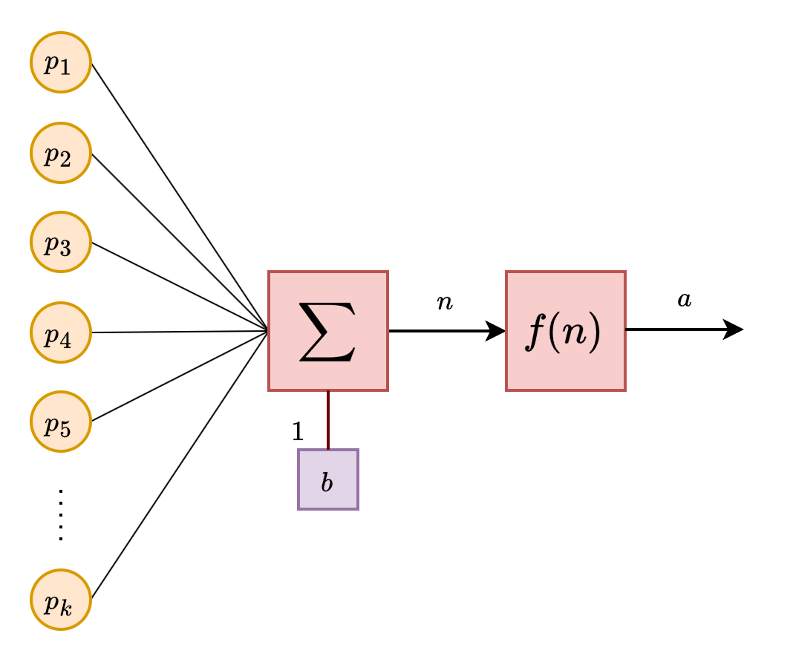
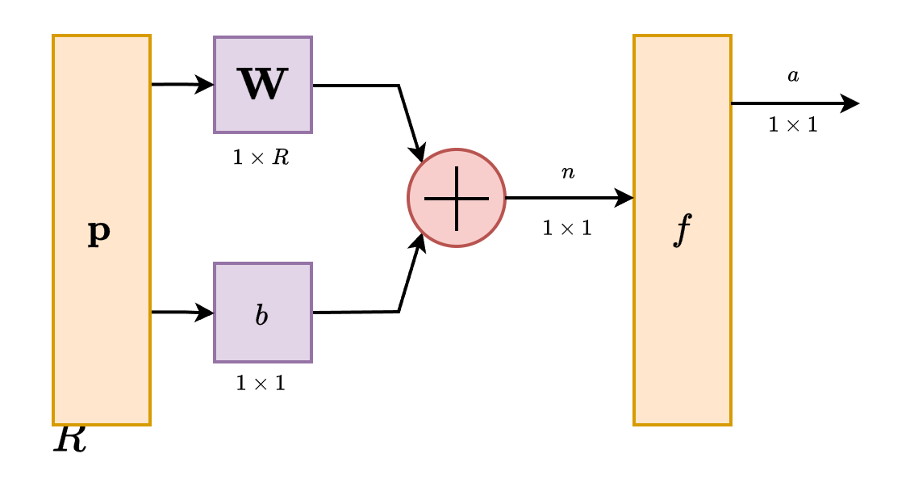

7 Extension 1 - multiple inputs
We have discussed and test out a bit on the single-input neuron. Granted, it is a not so perfect, but at least we have a sense of what the single-input neuron actually is. The next step toward is to identify what can be extended of such model.
A single-input neuron sounds just as it is - it receives one, and outputs one. What would happen if we increase its workload into two or more inputs? What will happen in such case?
7.1 Multiple inputs neuron
Let us say we have a set of input \(\{p_{1},p_{2},\dots,p_{n}\}\) from difference sources. Suppose the signal is scalar, that is, \(p_{i}\in\mathbb{F}=\mathbb{R}\) in this case. Individually, we can say that there will be \(n\) neurons processing \(n\) inputs. However, in this case, we want one neuron to process multiple inputs. How we can do this?
Remember that we have the input sequence as \(\bigoplus=wp+b\). In such case, we have the processing as a linear functional with weight \(w\) that control the strength of the signal, and the base shift \(p\) of the signal main base strength, or the default state consideration. We can then assume that every input to be received will have a different weight \(w_{i}\). So, the precursor form would be, for now we change the notation from \(a\) unit to \(N[\cdot]\)
\[ N([p_{i}]) \equiv w_{1}p_{1} + \dots + w_{2}p_{2} + \dots + w_{n}p_{n} \]
The bias, however, is different. While the formal equation is \(wp+b\), the bias here belongs to only the singular input \(p\). What will then happen to the other inputs? Would they have their separated bias? We first notice the following. If we set \(\bigoplus\) to be a global operation, then any operation and contribution from different input would be global, as it will be a reduction mapping from \(\mathbb{R}^{n}\to\mathbb{R}\). So we have two choices, either we have each input assigned of a bias, \(b_{i}\), or by having a singular one for all. Then, \[ N([p_{i}]) \equiv f(w_{1}p_{1} + \dots + w_{2}p_{2} + \dots + w_{n}p_{n} + b) \] for \(b=b_{1}+\dots+b_{n}\). If \(|b_{i}|=1\), then we only have a singular bias. Personally, it does not change much from the perspective of a singular unit, however, from a structural viewpoint, it means more degree of freedom toward the composition thereof. Such is to say we have the freedom to choose such interpretation, and even \(k\) decomposed bias for a group of input separately. Nevertheless, this is enough.
At this point, we would like to introduce a different language to express this structure. It is called, as you expected, linear algebra. Why? Because linear algebra makes use of the pretty convenient representation - multivariate form like vector and matrix, or in general, if we do not indict on the structure, we would like to call them the array form. However, we here choose to represent them into a vector space.
The input is now settled, for each input channel belong to a singular component dimension of the input dimensional space \(X\). Hence, the input vector \(\mathbf{x}\in X\) is presented as \[ \mathbf{x}=\begin{bmatrix} p_{1} & p_{2} & p_{3} & \dots & p_{n} \end{bmatrix} \] This is the same for the weight, written as \[ \mathbf{W}=\begin{bmatrix} w_{1} & w_{2} & w_{3} & \dots & w_{n} \end{bmatrix} \] The bias itself can be presented as such, but usually, we treat it as the abstraction itself, being nonlocal, compressed to the term \(b\) only. Then, the network is rewritten as \[ N([p_{i}]) \equiv f(\mathbf{W}^{\top}\mathbf{p}+b) = f(\langle \mathbf{W},\mathbf{p}\rangle + b) \] Where \(\langle \cdot,\cdot \rangle\) is just the usual dot product in linear algebra.

Here, we would like to also take into account of the expression that would be used further on. For now, as we have seen, we now have more than one weight reserved for the process operation. Simply call it \(w_{i}\) is enough. However, soon, we would be facing the notation for multiple neurons together of this type. So, what can we do? Let us denote \(w_{j,i}\) for such weight. The notation specifies the \(i\)th weights associated with connections to the \(j\)th neuron, and hence later on can also be used as an effective matrix notation.
7.2 Abbreviated notation
We borrow (since we base this knowledge base on it already) an idea of notation in Neural Network Design, called abbreviated notation. Simply speaking, we indict that
A neuron can be specified mainly of its structural parameters of similar kind.
This means that we can group together similar kind of parameters, for example, the input, into a singular blob. The another requirement for this to work is also the order in which the parameter participate in the control run of the neuron. Still, we can reduce the burden of notation to the minimum, as with the unit principle, many neurons will have the same structure, and unless we say otherwise, or it is structured distinctively, we always have such choice to group them together. This also assume a relatively basic assumption of forward passing operation, but we will get to that later.

The notation helps, but, with this notation, there is the side effect that we can use it for grouping multiple neurons together in the same component structure, providing they are constructed in the same way. This will only work so. Hence, naturally, we extend it to a neural network.